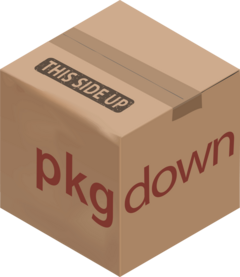

| pkgdown-package {pkgdown} | R Documentation |

Generate an attractive and useful website from a source package. 'pkgdown' converts your documentation, vignettes, 'README', and more to 'HTML' making it easy to share information about your package online.
Maintainer: Hadley Wickham hadley@posit.co (ORCID)
Authors:
Other contributors:
Posit Software, PBC [copyright holder, funder]
Useful links:
Report bugs at https://github.com/r-lib/pkgdown/issues